Rによるデータ前処理実習2024
(Graduate School of Life Sciences, Tohoku University)
- 入門1: 前処理とは。Rを使うメリット。Rの基本。
- 入門2: データ可視化の重要性と方法。
- データ構造の処理1: 抽出、集約など。
- データ構造の処理2: 結合、変形など。
- データ内容の処理: 数値、文字列、日時など。
- 実践: 現実の問題に対処してみる。
https://heavywatal.github.io/slides/tmd2024/
データ解析のおおまかな流れ
- コンピュータ環境の整備
- データの取得、読み込み
- 探索的データ解析
- 前処理、加工 (地味。意外と重い) 👈次回
- 可視化、仮説生成 (派手！楽しい！) 👈今回
- 統計解析、仮説検証 (みんな勉強したがる)
- 報告、発表

作図してみると全体像・構造が見やすい
情報の整理 → 正しい解析・新しい発見・仮説生成
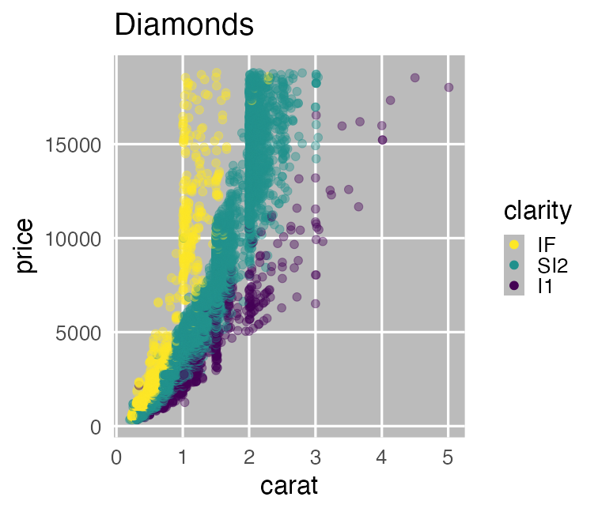carat が大きいほど price も高いらしい。
その度合いは clarity によって異なるらしい。
代表値ばかり見て可視化を怠ると構造を見逃す


そうは言ってもセンスでしょ? — NO!


ある程度はテクニックであり教養。
デザインの基本的なルールを
知りさえすれば誰でも上達する。
おしながき: Rによるデータ可視化
✅ データ解析全体の流れ。可視化だいじ
⬜ 一貫性のある文法で合理的に描けるggplot2
⬜ 画像出力まできっちりプログラミング


iris: アヤメ属3種150個体の測定データ
Rに最初から入ってて、例としてよく使われる。
print(iris)
Sepal.Length Sepal.Width Petal.Length Petal.Width Species
1 5.1 3.5 1.4 0.2 setosa
2 4.9 3.0 1.4 0.2 setosa
3 4.7 3.2 1.3 0.2 setosa
4 4.6 3.1 1.5 0.2 setosa
--
147 6.3 2.5 5.0 1.9 virginica
148 6.5 3.0 5.2 2.0 virginica
149 6.2 3.4 5.4 2.3 virginica
150 5.9 3.0 5.1 1.8 virginica
長さ150の数値ベクトル4本と因子ベクトル1本。
R標準のグラフィックス
描けるっちゃ描けるけど。カスタマイズしていくのは難しい。
boxplot(Petal.Width ~ Species, data = iris)
plot(iris$Sepal.Length, iris$Sepal.Width)
hist(iris$Petal.Length)
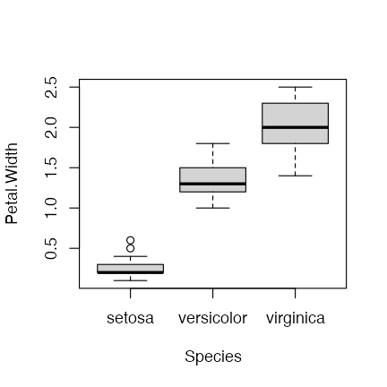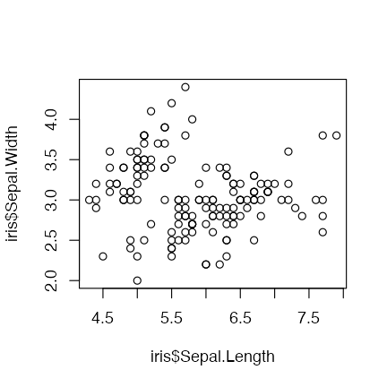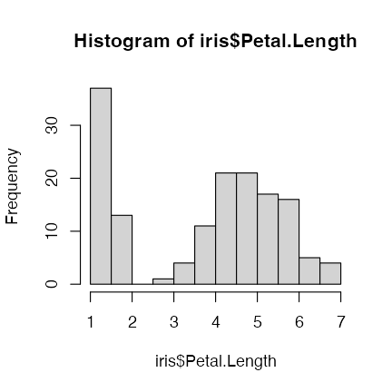
きれいなグラフを簡単に描けるパッケージを使いたい。
ggplot2: tidyverseの可視化担当

- “The Grammer of Graphics” という体系に基づく設計
- 単にいろんなグラフを「描ける」だけじゃなく
一貫性のある文法で合理的に描ける
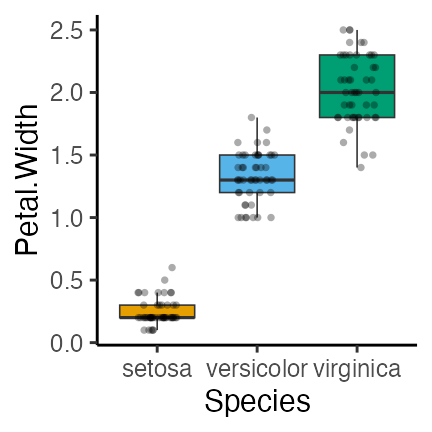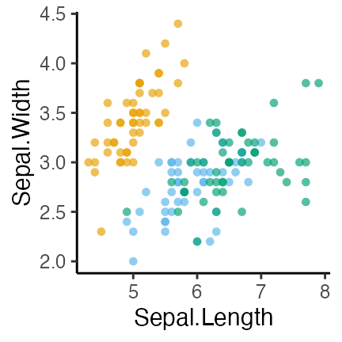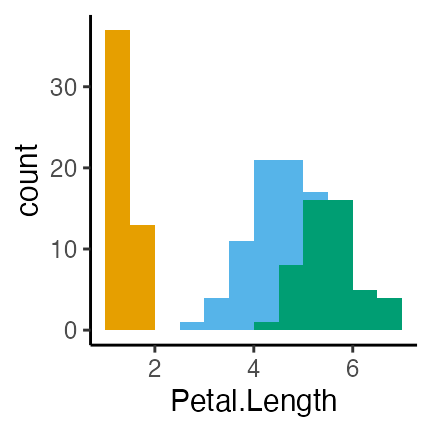
ggplot2: tidyverseの可視化担当
- “The Grammer of Graphics” という体系に基づく設計
- 単にいろんなグラフを「描ける」だけじゃなく
一貫性のある文法で合理的に描ける


いきなりggplot2から使い始めても大丈夫
R標準のやつとは根本的に違うシステムで作図する。

基本的な使い方: 指示を + で重ねていく

基本的な使い方: 指示を + で重ねていく
ggplot(data = diamonds) # diamondsデータでキャンバス準備
# aes(x = carat, y = price) + # carat,price列をx,y軸にmapping
# geom_point() + # 散布図を描く
# facet_wrap(vars(clarity)) + # clarity列に応じてパネル分割
# stat_smooth(method = lm) + # 直線回帰を追加
# coord_cartesian(ylim = c(0, 2e4)) + # y軸の表示範囲を狭く
# theme_classic(base_size = 20) # クラシックなテーマで
基本的な使い方: 指示を + で重ねていく
ggplot(data = diamonds) + # diamondsデータでキャンバス準備
aes(x = carat, y = price) # carat,price列をx,y軸にmapping
# geom_point() + # 散布図を描く
# facet_wrap(vars(clarity)) + # clarity列に応じてパネル分割
# stat_smooth(method = lm) + # 直線回帰を追加
# coord_cartesian(ylim = c(0, 2e4)) + # y軸の表示範囲を狭く
# theme_classic(base_size = 20) # クラシックなテーマで
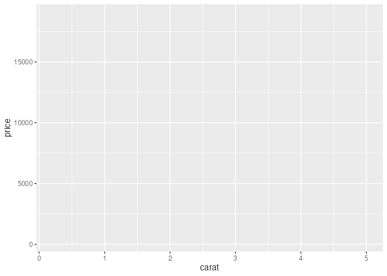
基本的な使い方: 指示を + で重ねていく
ggplot(data = diamonds) + # diamondsデータでキャンバス準備
aes(x = carat, y = price) + # carat,price列をx,y軸にmapping
geom_point() # 散布図を描く
# facet_wrap(vars(clarity)) + # clarity列に応じてパネル分割
# stat_smooth(method = lm) + # 直線回帰を追加
# coord_cartesian(ylim = c(0, 2e4)) + # y軸の表示範囲を狭く
# theme_classic(base_size = 20) # クラシックなテーマで
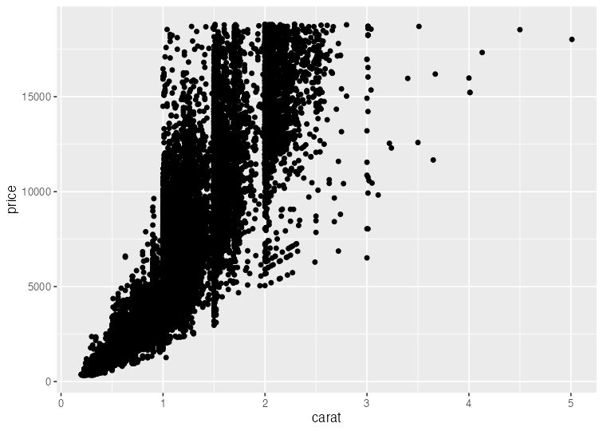
基本的な使い方: 指示を + で重ねていく
ggplot(data = diamonds) + # diamondsデータでキャンバス準備
aes(x = carat, y = price) + # carat,price列をx,y軸にmapping
geom_point() + # 散布図を描く
facet_wrap(vars(clarity)) # clarity列に応じてパネル分割
# stat_smooth(method = lm) + # 直線回帰を追加
# coord_cartesian(ylim = c(0, 2e4)) + # y軸の表示範囲を狭く
# theme_classic(base_size = 20) # クラシックなテーマで
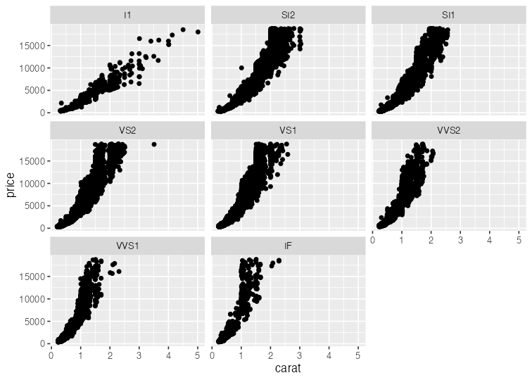
基本的な使い方: 指示を + で重ねていく
ggplot(data = diamonds) + # diamondsデータでキャンバス準備
aes(x = carat, y = price) + # carat,price列をx,y軸にmapping
geom_point() + # 散布図を描く
facet_wrap(vars(clarity)) + # clarity列に応じてパネル分割
stat_smooth(method = lm) # 直線回帰を追加
# coord_cartesian(ylim = c(0, 2e4)) + # y軸の表示範囲を狭く
# theme_classic(base_size = 20) # クラシックなテーマで
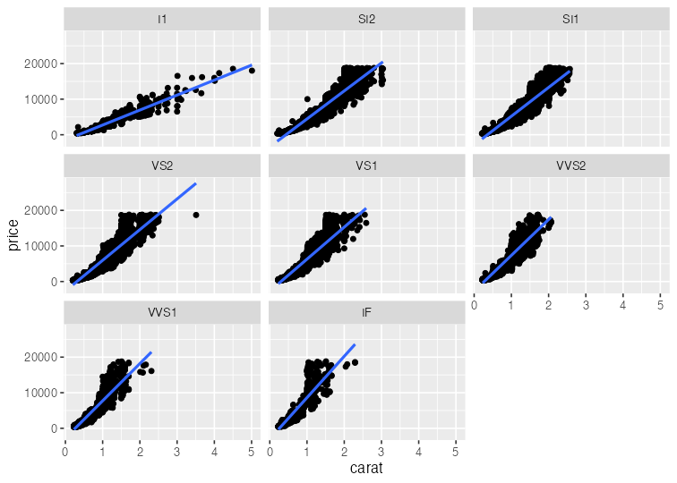
基本的な使い方: 指示を + で重ねていく
ggplot(data = diamonds) + # diamondsデータでキャンバス準備
aes(x = carat, y = price) + # carat,price列をx,y軸にmapping
geom_point() + # 散布図を描く
facet_wrap(vars(clarity)) + # clarity列に応じてパネル分割
stat_smooth(method = lm) + # 直線回帰を追加
coord_cartesian(ylim = c(0, 2e4)) # y軸の表示範囲を狭く
# theme_classic(base_size = 20) # クラシックなテーマで
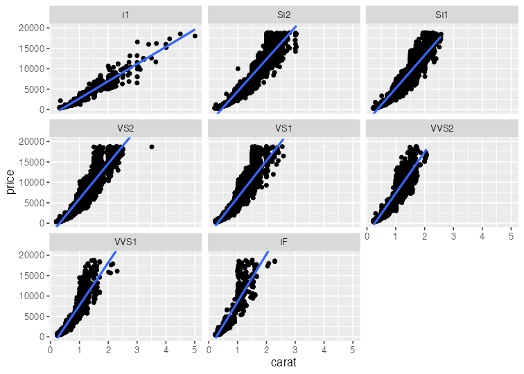
基本的な使い方: 指示を + で重ねていく
ggplot(data = diamonds) + # diamondsデータでキャンバス準備
aes(x = carat, y = price) + # carat,price列をx,y軸にmapping
geom_point() + # 散布図を描く
facet_wrap(vars(clarity)) + # clarity列に応じてパネル分割
stat_smooth(method = lm) + # 直線回帰を追加
coord_cartesian(ylim = c(0, 2e4)) + # y軸の表示範囲を狭く
theme_classic(base_size = 20) # クラシックなテーマで
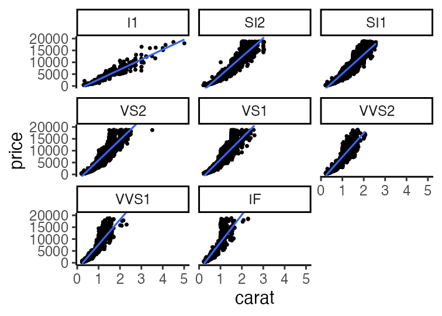
基本的な使い方: 指示を + で重ねていく
ggplot(data = diamonds) + # diamondsデータでキャンバス準備
aes(x = carat, y = price) + # carat,price列をx,y軸にmapping
geom_point() + # 散布図を描く
# facet_wrap(vars(clarity)) + # clarity列に応じてパネル分割
# stat_smooth(method = lm) + # 直線回帰を追加
# coord_cartesian(ylim = c(0, 2e4)) + # y軸の表示範囲を狭く
theme_classic(base_size = 20) # クラシックなテーマで
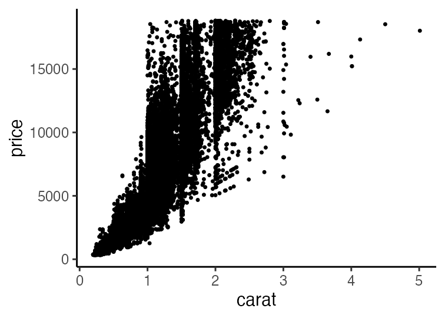
途中経過オブジェクトを取っておける
p1 = ggplot(data = diamonds)
p2 = p1 + aes(x = carat, y = price)
p3 = p2 + geom_point()
p4 = p3 + facet_wrap(vars(clarity))
print(p3)
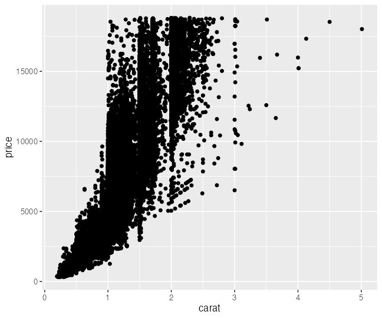
この p3 は後で使います。
ひとまずggplotしてみよう
自動車のスペックに関するデータ mpg を使って。
manufacturer model displ year cyl trans drv cty hwy fl class
1 audi a4 1.8 1999 4 auto(l5) f 18 29 p compact
2 audi a4 1.8 1999 4 manual(m5) f 21 29 p compact
--
233 volkswagen passat 2.8 1999 6 manual(m5) f 18 26 p midsize
234 volkswagen passat 3.6 2008 6 auto(s6) f 17 26 p midsize
🔰 排気量 displ と市街地燃費 cty の関係を散布図で。
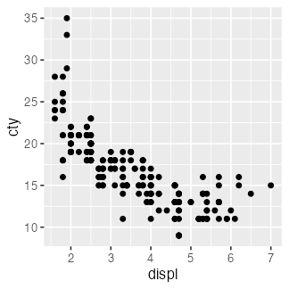
よくあるエラー
関数名を ggplot2 と書いちゃうと勘違い:
> ggplot2(diamonds)
Error in ggplot2(diamonds) : could not find function "ggplot2"
ggplot2 はパッケージ名。
今度こそ関数名は合ってるはずなのに…
> ggplot(diamonds)
Error in ggplot(diamonds) : could not find function "ggplot"
パッケージ読み込みを忘れてた。新しくRを起動するたびに必要:
library(conflicted) # 安全のおまじない
library(tidyverse) # including ggplot2
ggplot(diamonds) # OK!
そのほか よくあるエラー集 (石川由希さん@名古屋大) を参照。
ggplot() に渡すのは整然データ tidy data
- 1行は1つの観測
- 1列は1つの変数
- 1セルは1つの値
- この列をX軸、この列をY軸、この列で色わけ、と指定できる！
print(diamonds)
carat cut color clarity depth table price x y z
1 0.23 Ideal E SI2 61.5 55 326 3.95 3.98 2.43
2 0.21 Premium E SI1 59.8 61 326 3.89 3.84 2.31
3 0.23 Good E VS1 56.9 65 327 4.05 4.07 2.31
4 0.29 Premium I VS2 62.4 58 334 4.20 4.23 2.63
--
53937 0.72 Good D SI1 63.1 55 2757 5.69 5.75 3.61
53938 0.70 Very Good D SI1 62.8 60 2757 5.66 5.68 3.56
53939 0.86 Premium H SI2 61.0 58 2757 6.15 6.12 3.74
53940 0.75 Ideal D SI2 62.2 55 2757 5.83 5.87 3.64
Aesthetic mapping でデータと見せ方を紐付け
aes() の中で列名を指定する。
ggplot(diamonds) +
aes(x = carat, y = price) +
geom_point(mapping = aes(color = clarity, size = cut))
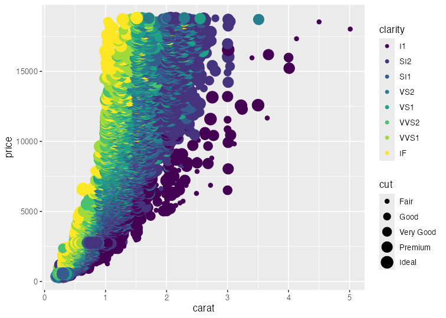
データによらず一律でaestheticsを変える
aes() の外で値を指定する。
ggplot(diamonds) +
aes(x = carat, y = price) +
geom_point(color = "darkorange", size = 6, alpha = 0.4)
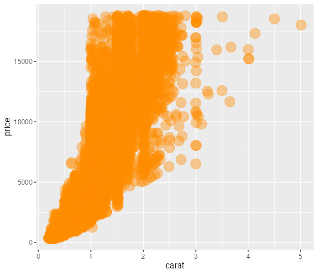
外の aes() は全ての geom_*() に波及する
ggplot(diamonds) +
aes(x = carat, y = price) +
geom_point(aes(color = clarity)) +
geom_line() # NO color
ggplot(diamonds) +
aes(x = carat, y = price, color = clarity) +
geom_point() + # color
geom_line() # color
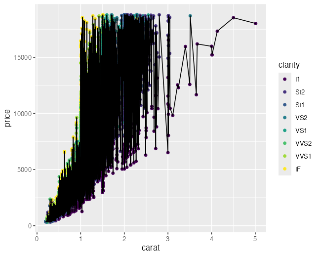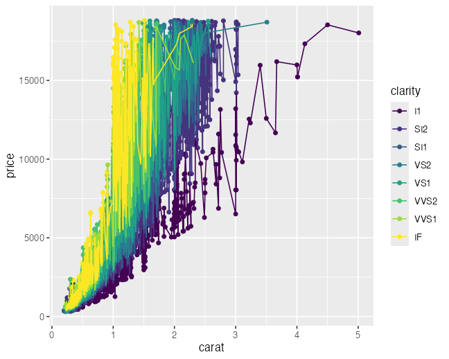
aesthetics一覧
点と線と文字は color, 面は fill
不透明度は alpha
ggplot(diamonds) +
aes(cut, carat) +
geom_boxplot(color = "royalblue", fill = "gold", alpha = 0.5, linewidth = 2)
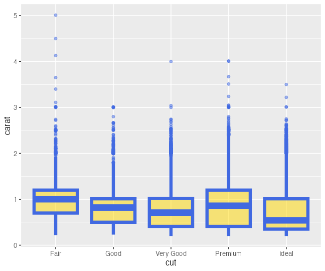
色の変え方の練習
自動車のスペックに関するデータ mpg を使って。
manufacturer model displ year cyl trans drv cty hwy fl class
1 audi a4 1.8 1999 4 auto(l5) f 18 29 p compact
2 audi a4 1.8 1999 4 manual(m5) f 21 29 p compact
--
233 volkswagen passat 2.8 1999 6 manual(m5) f 18 26 p midsize
234 volkswagen passat 3.6 2008 6 auto(s6) f 17 26 p midsize
🔰 排気量 displ と市街地燃費 cty の関係を青い散布図で描こう
🔰 駆動方式 drv やシリンダー数 cyl によって色を塗り分けしてみよう
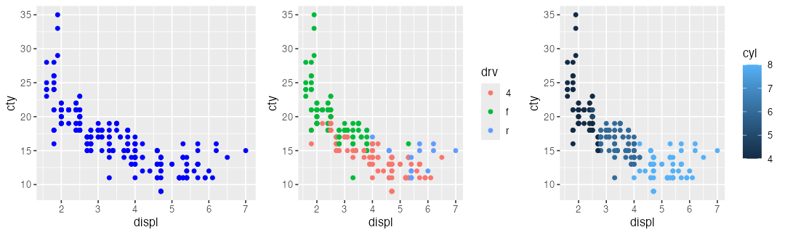
色の見え方は人によって違う
赤
緑
青の3色を使った先ほどの図は多くの人には問題なさそう。
しかし5%くらいの人には右のように赤
緑
青 や
赤
緑
青の2色に見えている。
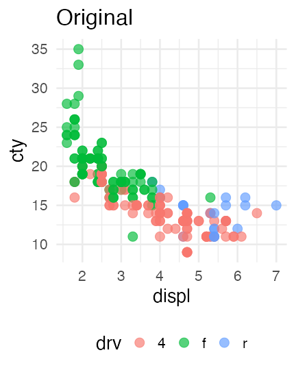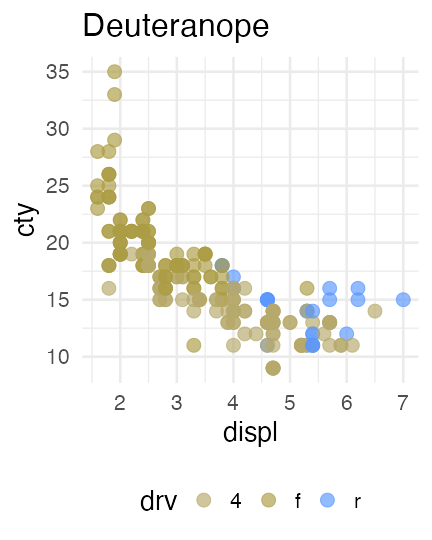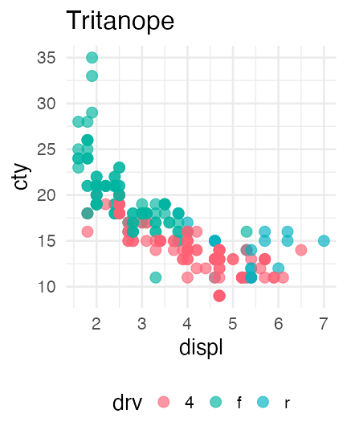
MacやiOSならSim Daltonismというアプリでシミュレーションできる。
WindowsならColor Oracleが使えそう。
多様性を前提によく考えられたパレットもある
Sequential palette:
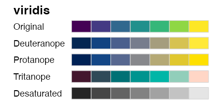 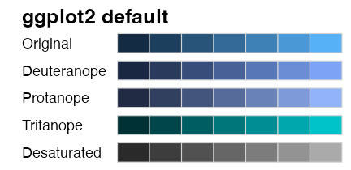
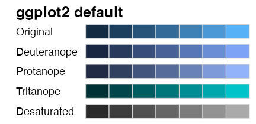
Diverging palette:
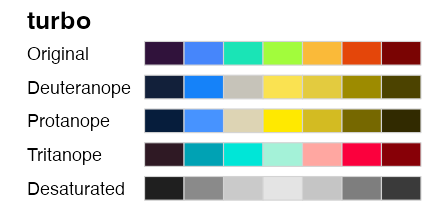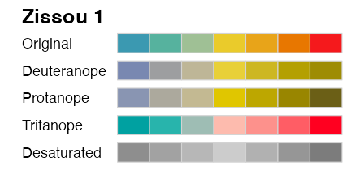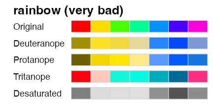
Qualitative (categorical, discrete) palette:
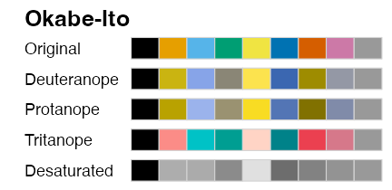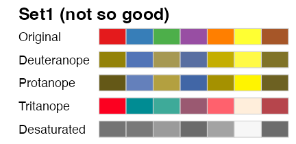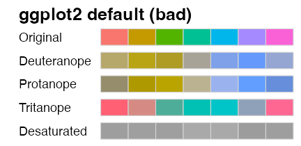
色パレットの変更 scale_color_*()
viridis
と
ColorBrewer
のパレットはggplot2に組み込まれているので簡単。
上記リンクから名前を探して、option = か palette = で指定。
p = ggplot(diamonds) + aes(carat, price, color = clarity) + geom_point()
p + scale_color_viridis_d(option = "inferno") + labs(title = "inferno")
p + scale_color_brewer(palette = "YlGnBu") + labs(title = "YlGnBu")
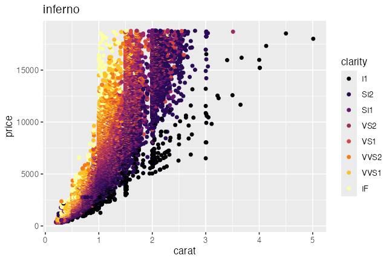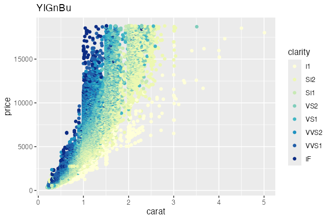
連続値(continuous)と離散値(discrete)を区別する
渡す値とscale関数が合ってないと怒られる:
Error: Continuous value supplied to discrete scale
p = ggplot(diamonds) + aes(carat, price, color = price) + geom_point()
p + scale_color_viridis_c(option = "inferno") + labs(title = "inferno")
p + scale_color_distiller(palette = "YlGnBu") + labs(title = "YlGnBu")
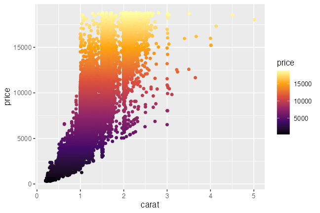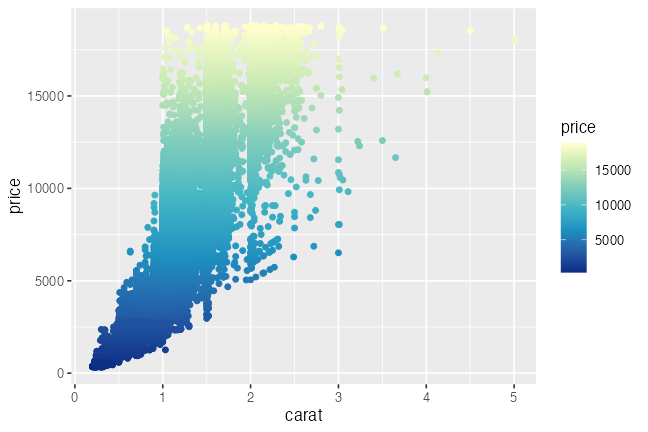
- discrete:
scale_color_viridis_d(),scale_color_brewer() - continuous:
scale_color_viridis_c(),scale_color_distiller() - binned:
scale_color_viridis_b(),scale_color_fermenter()
viridisやbrewer以外のパレットを使うには
R標準の palette.colors() や
colorspaceパッケージ
を使う。
okabe_ito = palette.colors(9L, "Okabe-Ito")
p = ggplot(mpg) + aes(x = displ, y = cty, color = drv) +
geom_point(size = 4, alpha = 0.66)
p + scale_color_discrete(type = unname(okabe_ito)[-1]) + labs(title = "Okabe-Ito")
p + scale_color_discrete(type = palette.colors(8L, "R4")[-1]) + labs(title = "R4")
p + colorspace::scale_colour_discrete_divergingx("Zissou 1") + labs(title = "Zissou 1")
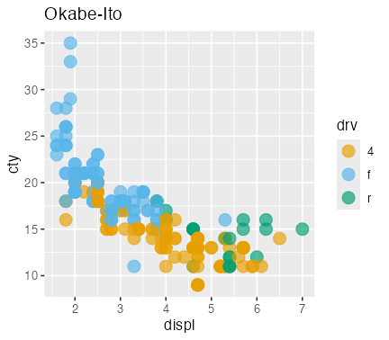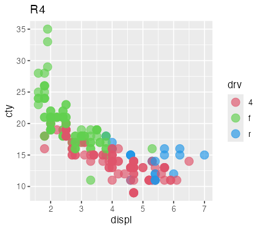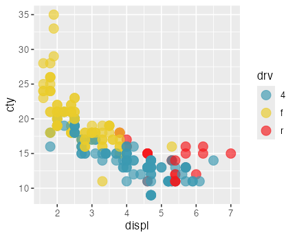
自分で全色個別指定もできるが、専門家の考えたセットを使うのが無難。
scale_color_* を省略できるように設定することも可能
連続値viridis, 離散値Okabe-Itoをデフォルトにする例:
library(conflicted) # 安全のおまじない
library(tidyverse) # including ggplot2
grDevices::palette("Okabe-Ito")
options(
ggplot2.continuous.colour = "viridis",
ggplot2.continuous.fill = "viridis",
ggplot2.discrete.colour = grDevices::palette()[-1],
ggplot2.discrete.fill = grDevices::palette()[-1]
)
options() による設定はRを終了するまで有効。
値に応じてパネル切り分け (1変数facet)
ggplotの真骨頂！ これをR標準機能でやるのは結構たいへん。
p3 + facet_wrap(vars(clarity), ncol = 4L)
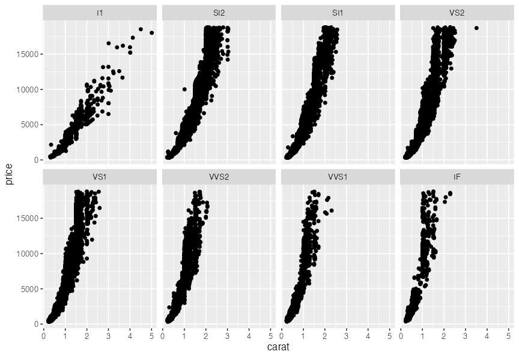
値に応じてパネル切り分け (≥2変数facet)
ggplotの真骨頂！ これをR標準機能でやるのは結構たいへん。
p3 + facet_grid(vars(clarity), vars(cut))
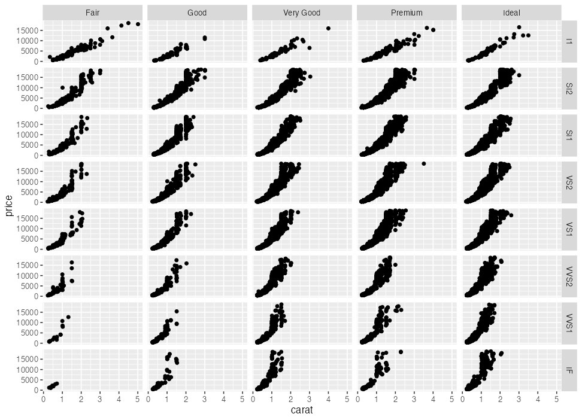
多変量データの俯瞰、5次元くらいまで有効
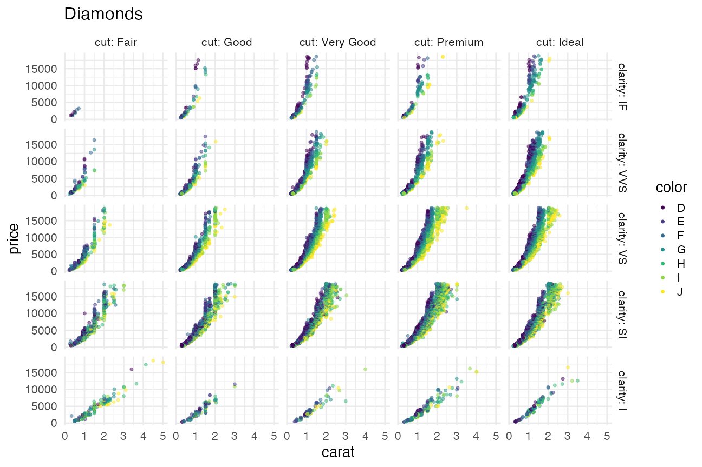
値に応じたfacetの練習
自動車のスペックに関するデータ mpg を使って。
manufacturer model displ year cyl trans drv cty hwy fl class
1 audi a4 1.8 1999 4 auto(l5) f 18 29 p compact
2 audi a4 1.8 1999 4 manual(m5) f 21 29 p compact
--
233 volkswagen passat 2.8 1999 6 manual(m5) f 18 26 p midsize
234 volkswagen passat 3.6 2008 6 auto(s6) f 17 26 p midsize
🔰 駆動方式 drv やシリンダー数 cyl によってfacetしてみよう
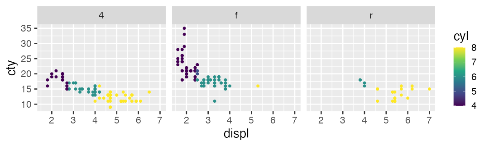
値を変えず座標軸を変える scale_*, coord_*
ggplot(diamonds) + aes(carat, price) + geom_point(alpha = 0.25) +
scale_x_log10() +
scale_y_log10(breaks = c(1, 2, 5, 10) * 1000) +
coord_cartesian(xlim = c(0.1, 10), ylim = c(800, 12000)) +
labs(title = "Diamonds", x = "Size (carat)", y = "Price (USD)")
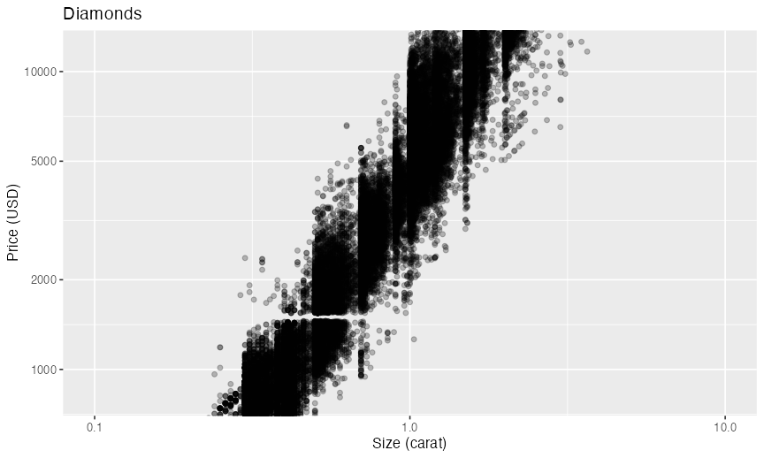
データと関係ない部分の見た目を調整 theme
既存の theme_*()
をベースに、theme()関数で微調整。
p3 + theme_bw(base_size = 18) + theme(
panel.background = element_rect(fill = "khaki"), # 箱
panel.grid = element_line(color = "royalblue"), # 線
axis.title.x = element_text(size = 32), # 文字
axis.text.y = element_blank() # 消す
)
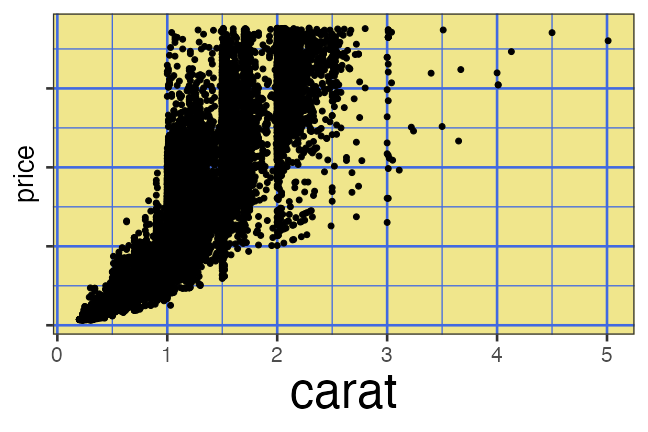
基本的な使い方: 指示を + で重ねていく
論文のFigureみたいに並べる
別のパッケージ (cowplot や patchwork) の助けを借りて
pAB = cowplot::plot_grid(p3, p3, labels = c("A", "B"), nrow = 1L)
cowplot::plot_grid(pAB, p3, labels = c("", "C"), ncol = 1L)
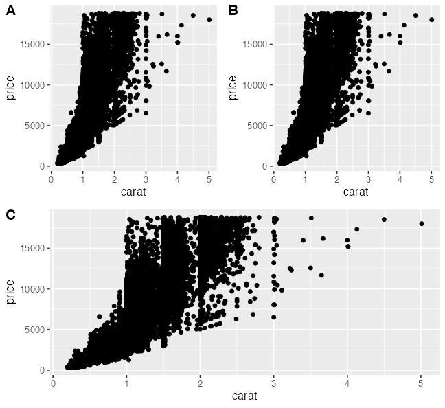
ファイル名もサイズも再現可能な作図
widthやheightが小さいほど、文字・点・線が相対的に大きく
# 7inch x 300dpi = 2100px四方 (デフォルト)
ggsave("dia1.png", p3) # width = 7, height = 7, dpi = 300
# 4 x 300 = 1200 全体7/4倍ズーム
ggsave("dia2.png", p3, width = 4, height = 4) # dpi = 300
# 2 x 600 = 1200 全体をさらに2倍ズーム
ggsave("dia3.png", p3, width = 2, height = 2, dpi = 600)
# 4 x 300 = 1200 テーマを使って文字だけ拡大
ggsave("dia4.png", p3 + theme_bw(base_size = 22), width = 4, height = 4)


日本語が◻️◻️◻️豆腐にならないための設定
環境設定 → General → Graphics → Backend: AGG

英数字以外を使わずに済ませられればそれに越したことはないけど…
他にどんな種類の geom_*() が使える？
なんでもある。 公式サイトを見に行こう。


微調整してくと最終的に長いコードになるね…
うん。でもすべての点について後から確認できるし、使い回せる！
set.seed(1)
p = ggplot(diamonds) +
aes(x = cut, y = price) +
geom_jitter(aes(color = cut), height = 0, width = 0.2, alpha = 0.1, stroke = 0) +
geom_boxplot(fill = NA, outlier.shape = NA) +
scale_color_viridis_d(option = "plasma") +
facet_wrap(vars(clarity)) +
coord_flip(xlim = c(0.5, 5.5), ylim = c(0, 20000), expand = FALSE) +
labs(title = "Diamonds", x = "Cut", y = "Price (USD)") +
theme_bw(base_size = 20) +
theme(legend.position = "none",
axis.ticks = element_blank(),
panel.grid.major.y = element_blank(),
panel.spacing.x = grid::unit(3, "lines"),
plot.margin = grid::unit(c(1, 2, 0.5, 0.5), "lines"))
print(p)
ggsave("diamonds-cut-price.png", p, width = 12, height = 9)
発展的な内容
- ggplot2をさらに拡張するパッケージも続々
- アニメーション gganimate
- 重なりを避けてラベル付け ggrepel
- グラフ/ネットワーク ggraph
- 系統樹 ggtree
- 地図
geom_sf - 学術論文向けのいろいろ ggpubr

本日2時限目の話題: Rによるデータ可視化
✅ まずデータ全体を可視化してみるのがだいじ
✅ 一貫性のある文法で合理的に描けるggplot2
✅ 画像出力まできっちりプログラミング
🔰 課題
下図になるべく似るように調整して ggsave() してください。
最終日、何人かにコードと図を画面共有してもらい、私が添削します。
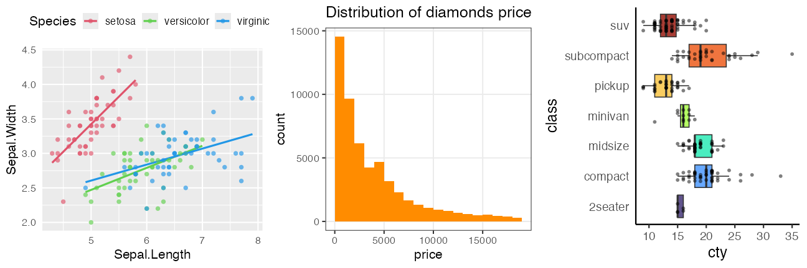
🔰 自由課題
公式サイトや解説ブログなどを参考にいろいろな関数・オプションを試そう。
最終日、何人かにコードと図を画面共有してもらい、私が添削します。
- 図の意義や独創性は置いておいて「描きたいものが描ける」を目指す。
- 「講義で紹介されなかったこのオプションが便利」
「ホントはこうしたかったけど方法が見つからなかった」
などのコメント・質問が多く出ることを期待します。
参考
- R for Data Science — Hadley Wickham et al.
- https://r4ds.hadley.nz, Paperback
- 日本語版書籍(Rではじめるデータサイエンス)
- Other versions
- 「Rにやらせて楽しよう — データの可視化と下ごしらえ」 岩嵜航 2018
- 「Rを用いたデータ解析の基礎と応用」 石川由希 2024 名古屋大学
- ggplot2公式ドキュメント
- https://ggplot2.tidyverse.org/